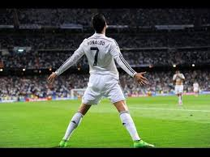

Skills-Messi only does body feint, chips, and sudden acceleration, while ronaldo knows stepovers, outside foot, marsille turn, cruyff turn, and more.
Shooting-Messi is not able to to cannonball but can only chip the ball or to swift but soft top-ins. Ronaldo's shots are powerfull, always go in the acute angles, do knucleballs, and can curve the ball like beckham(but beckham is still a bit better at this)
THAT IS WHY RONALDO IS BETTER
